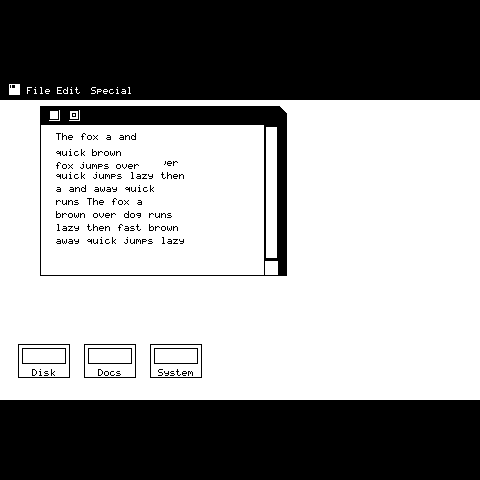

480×320，不缩放
512×342 → 480×480 本来需要一整个重采样阶段。但 480/320 = 1.5，512/342 ≈ 1.497，宽高比本来就是一致的。直接用原生尺寸，等于删掉了一次全像素遍历。
ESP32-S31 · 480×480 CO5300 · 1 bit/pixel
对经典 Macintosh 图形核心 —— BitBlt、Region、GrafPort —— 的 clean-room 重实现，用可移植 C11 重写，目标是 480×480 面板。下面那张图不是设计稿，是同一套引擎画出来的。

1984 年的 Macintosh 在 7.836 MHz 的 68000 上跑着可拖动窗口、区域裁剪、脏矩形重绘、滚动条和下拉菜单。它的核心就是 BitBlt 和 Region。
512×342 → 480×480 本来需要一整个重采样阶段。但 480/320 = 1.5，512/342 ≈ 1.497，宽高比本来就是一致的。直接用原生尺寸，等于删掉了一次全像素遍历。
原版把 Region 塞进 16 字节，每个集合运算都是手写位运算。S31 有 16 MB PSRAM，用内存换可验证性是白赚的。矩形 Region 仍然原地存储、零堆分配。
在没有 GPU、没有 DMA 引擎、没有 alpha 的设备上，1-bit 是唯一一种能让整屏重绘塞进 16 ms 的位深。480×320 是 18,750 字节，不是 460 KB。
窗口移动损伤的是新旧位置的对称差。你怎么存这个数，帧率差一个数量级。
窗口移动的包围盒就是整个窗口，哪怕只拖 1 像素。
切成逐扫描线的 run，再把竖直方向相同的 run 合并成极大矩形。
| 移动 | 损伤 | 上链路 |
|---|---|---|
| 40 px diagonal / 40 px 斜向 | 25,600 px | 51 KB |
| 1 px diagonal / 1 px 斜向 | 818 px | 1.6 KB |
| no-op / 无操作 | 0 px | 0 |
完全不用硬件就能验证：test/test_window.c 拖动窗口，每一步之后断言窗口外没有任何残留黑像素。有残留就是漏掉的损伤，落到面板上就是拖影。
x86-64、GCC 12、-O2。S31 会更慢。有参考价值的是比例，不是绝对值。
非对齐 BitBlt 曾经走逐字节分块路径，比对齐慢 14 倍。拖窗口天生非对齐，所以改成把源数据过 64 位窗口滑动。
0.104 → 0.047 ms
qd_region_spans() 每次查询都要把前面所有行的 span 数累加一遍，让整屏 region blit 变成平方复杂度。换成前缀和 offset 表。
0.040 → 0.014 ms
每一条在常见路径上都看不出来。现在每一条都有回归测试守着。
rop_byte_chunk()只在 dp == 0 时正确，也就是所有非对齐 span 全错。整字节路径把它盖住了。qd_fill_span_1bpp()只在 head/tail 被裁剪时错，第一次暴露是 frameRect 把 3px 边框裁成 3px。spans_xor lost spans一个 span 可能压住另一个列表的下一个 span，头尾合并和双游标都处理不了。换成事件扫描。qd_port_set_white() existed, qd_fill_rect() ignored it调用方设白笔期待擦除，实际得到黑色，而且完全没法察觉。# correctness + throughput + sanitised run
make test
make bench
make asan
# regenerate the screenshot above
make rendergit clone https://github.com/esp-mosaico/esp-mosaico-vibe.git
cd esp-mosaico-vibe
git submodule update --init \
submodule/esp-mosaico-utils \
submodule/esp-mosaico-bsp
git clone https://github.com/hkgood/MosaiMac.git \
projects/qd_esp32s31板级初始化交给 esp-mosaico-bsp（bsp_display_new() / bsp_touch_new()），不自己硬编码 CO5300 和 CST9217 的引脚。同目录的 mosaico-film 就是这么做的。
| ROP / CopyBits / fill / frameRect | done · host-tested |
| Region：union / intersect / xor / offset / invert | done · host-tested |
| GrafPort：clip、origin、Save/RestoreGState | done · host-tested |
| 窗口移动脏矩形回路 | done · host-tested |
| 1bpp → RGB565 展开、分带推送 | done · host-tested |
| ESP-IDF / ESP32-S31 移植 | written, never compiled |
核心在主机上过 3,124 个检查，ASan + UBSan 干净。平台层是经过 review 的骨架 —— 没有 ESP-IDF 工具链可编译它。「能编译」是第一个待解决的问题，不是「能用」。